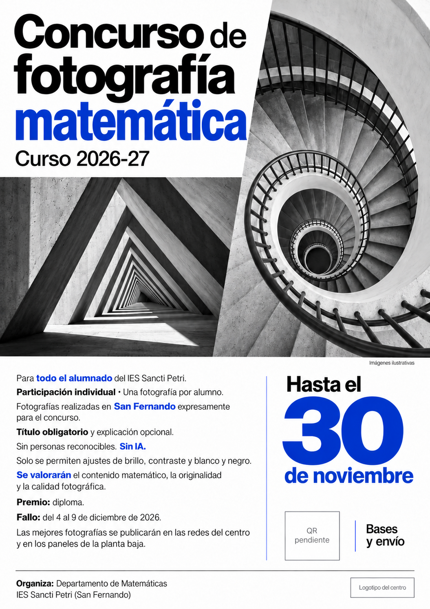

Organización y finalidad
El Departamento de Matemáticas del IES Sancti Petri organiza este concurso para descubrir las matemáticas presentes en nuestro entorno y fomentar la creatividad a través de la fotografía.
San Fernando · Curso 2026-27
Las matemáticas de nuestro entorno, a través de tu cámara.
Para todo el alumnado del IES Sancti Petri.
Una fotografía por alumno. Participación individual.

Envía tu fotografía hasta el
Fallo del jurado
4—9 diciembrePremio: diploma acreditativoAntes de participar
Realizada expresamente para el concurso dentro del término municipal de San Fernando. Con móvil o cámara.
Solo se permiten ajustes de brillo, contraste y conversión a blanco y negro. Sin firmas ni marcas de agua.
La explicación matemática es opcional. El jurado valorará el contenido matemático, la originalidad y la calidad fotográfica.
Tu participación
Prepara el archivo, el título y el lugar donde la hiciste.
Conserva el original hasta que termine el concurso.
El formulario de envío todavía no está disponible. Puedes consultar las bases más abajo.
Abrir el formulario en otra pestaña ↗El Departamento de Matemáticas del IES Sancti Petri organiza este concurso para descubrir las matemáticas presentes en nuestro entorno y fomentar la creatividad a través de la fotografía.
Podrá participar todo el alumnado matriculado en el IES Sancti Petri, de cualquier curso. La participación será individual y cada participante podrá presentar una única fotografía. Se establece una sola categoría para todo el alumnado.
La temática será libre, siempre que la fotografía tenga una relación con las matemáticas: geometría, números, proporciones, simetrías, patrones, perspectivas u otros conceptos matemáticos.
Todas las fotografías deberán haberse realizado dentro del término municipal de San Fernando (Cádiz).
Las fotografías deberán ser originales, realizadas por el propio participante y tomadas expresamente para este concurso. Podrán hacerse con cámara fotográfica o teléfono móvil, en color o en blanco y negro.
Únicamente se permitirán ajustes de brillo y contraste y la conversión a blanco y negro. No se admitirán otros filtros, fotomontajes, incorporación o eliminación de elementos ni imágenes generadas o modificadas mediante inteligencia artificial.
No podrán aparecer personas reconocibles. Para preservar el anonimato durante la valoración, la imagen no deberá contener firmas, marcas de agua ni otros elementos que identifiquen a su autor o autora.
Cada participante deberá conservar el archivo original, que podrá ser solicitado por la organización para comprobar el cumplimiento de estas bases.
La fotografía se enviará a través del formulario web del concurso, indicando nombre y apellidos, curso y grupo, título y lugar de San Fernando donde se ha realizado. De manera opcional, podrá incluirse una breve explicación de su relación con las matemáticas. La ausencia de explicación no supondrá una penalización.
El título y la explicación no deberán incluir información que permita identificar al participante.
El plazo finalizará el 30 de noviembre de 2026 a las 23:59, hora peninsular española. No se admitirán fotografías presentadas fuera de plazo.
Para el envío web se admitirán archivos JPEG o PNG de hasta 10 MB. Se mostrará una vista previa antes de enviar y, cuando el archivo se haya guardado correctamente, un código de justificante.
El jurado estará formado por profesorado del Departamento de Matemáticas. Cada fotografía se identificará mediante un código. Durante la valoración, el jurado tendrá acceso a la imagen, su título y, si se ha incluido, su explicación, sin conocer el nombre, curso ni grupo de su autor o autora.
Los datos identificativos se utilizarán para gestionar la participación y se mantendrán separados de la información mostrada al jurado.
| Criterio | Qué se valora | Puntos |
|---|---|---|
| Contenido matemático | Presencia, interés y claridad de la relación con las matemáticas. | 0–10 |
| Originalidad | Creatividad de la idea y de la manera de representar las matemáticas. | 0–10 |
| Calidad fotográfica | Composición, encuadre, iluminación y calidad visual de la imagen. | 0–10 |
Los tres criterios tendrán el mismo peso. Cada valoración sumará un máximo de 30 puntos. La puntuación final será la media de las puntuaciones totales otorgadas por los miembros del jurado.
La fotografía con mayor puntuación final será la ganadora. Su autor o autora recibirá un diploma acreditativo. En caso de empate en la mayor puntuación, todas las fotografías empatadas serán declaradas ganadoras y cada participante recibirá su correspondiente diploma.
El fallo se anunciará entre el 4 y el 9 de diciembre de 2026, ambos incluidos.
Las mejores fotografías se mostrarán en las redes sociales oficiales del centro y en los paneles de la planta baja, una vez finalizada la valoración y recogidas las autorizaciones correspondientes.
La autoría seguirá perteneciendo a sus creadores. La autorización para su publicación se limitará a la difusión del concurso y de sus resultados.
La participación implica la aceptación de estas bases y la declaración de que la fotografía presentada es propia y cumple los requisitos establecidos. Las fotografías que incumplan las bases quedarán excluidas.